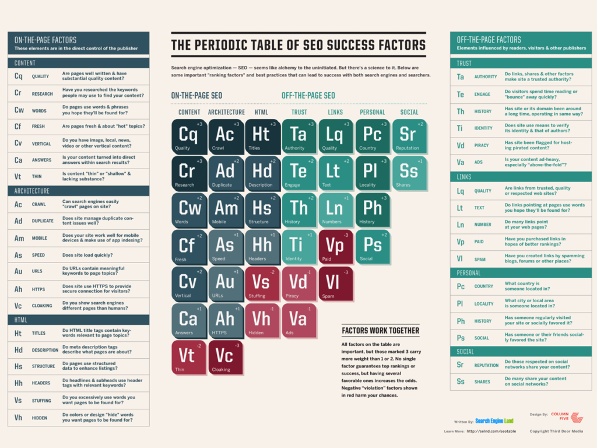

Major Search
All major search engines such as Google, Bing and Yahoo have primary search results, where web pages and other content such as videos or local listings are shown and ranked based on what the search engine considers most relevant to users. Payment isn't involved, as it is with paid search ads.
The Periodic Table of SEO Success Factors
For more basic but also in-depth advice, our Periodic Table Of SEO Success Factors, shown below, introduces you to all the key concepts you need to know:
Advice For Beginners
As a companion to the table, Search Engine Land's Guide To SEO explains the ranking factors in more depth, in a tutorial providing tips and advice on implementing them. You can view a condensed version of the SEO Table explained in a quick presentation format here: